Tööriistade ja mõõteseadmete register QR-koodiga. Kasutusjuhend töötajale, haldurile ja hooldajale.
Igal seadmel on QR-kleebis. Töötaja skännib selle telefoniga, kui võtab seadme kasutusse või toob tagasi. Nii on alati näha, kelle käes seade on, kus see viimati oli, millal tuleb taatlus või hooldus ning mis seadmega on juhtunud.
Kui seade kaob ja keegi selle leiab, saab leidja kleebise kaudu omanikule teada anda. Väline hooldusfirma saab samuti kleebise kaudu teha hoolduse sissekanded ja lisada aktid.
Rakendust ei pea rakenduste poest otsima ega installima: see töötab telefoni brauseris ja selle saab lisada avaekraanile.
© 2026 Kindavel. Krativara on Kindaveli rakendus. Juhendi ja rakenduse kujunduse kopeerimine ilma Kindaveli loata on keelatud. Pildid on tehtud näidisandmetega.
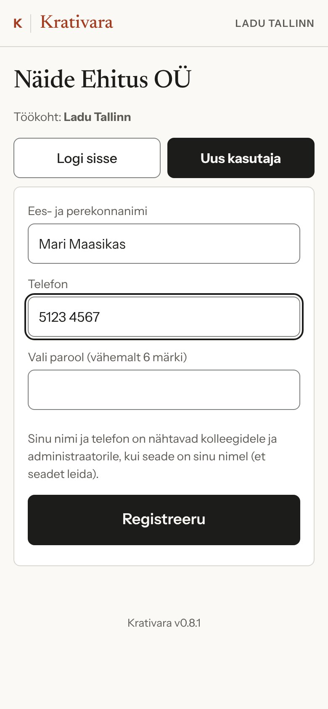
Igas laos ja objektil on töökoha plakat QR-koodiga. Skänni see telefoni kaameraga.
Kui ettevõte kinnitab uued kasutajad, saad seadmeid võtta pärast halduri kinnitust. Rakendus ütleb seda avalehel.
Telefon jääb sisse logituks. Teises telefonis vali Logi sisse ja sisesta telefon ning parool.
Android (Chrome): lehe allservas Lisa avakuvale või brauseri menüüst „Lisa avaekraanile“.
iPhone (Safari): Jaga → „Lisa avaekraanile“.
Avaekraanil on ikoon K | VARA. Edaspidi ava rakendus sealt.
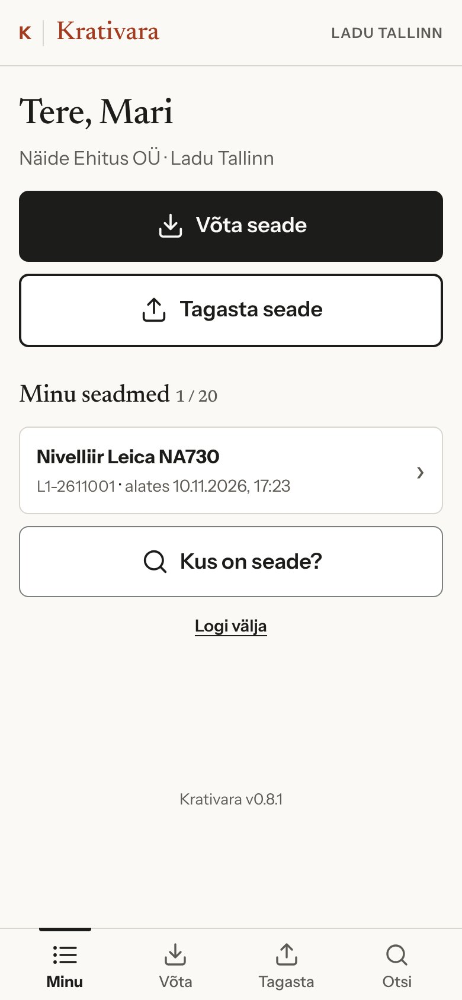
Avalehel on kaks põhinuppu: Võta seade ja Tagasta seade. Nende all on sinu nimel olevad seadmed ja sinu broneeringud.
Seadme real on inventarinumber ja aeg, millest alates see on sinu nimel. Vajuta real, et avada seadme kaart.
Avalehel näed ka teateid, mis puudutavad sind: näiteks kui sinu käes oleva seadme on keegi järgmisteks päevadeks broneerinud või kui kolleeg võttis sinu nimel oleva seadme üle.
| Minu | avaleht: sinu seadmed, broneeringud ja teated |
|---|---|
| Võta | skänni seade (või mitu järjest) ja võta oma nimele |
| Tagasta | skänni seade ja tagasta lattu |
| Otsi | „Kus on seade?“ – kelle käes või millises laos |
Ülal paremal on töökoht, mille plakatilt viimati sisse tulid. Tagastus seotakse selle töökohaga.
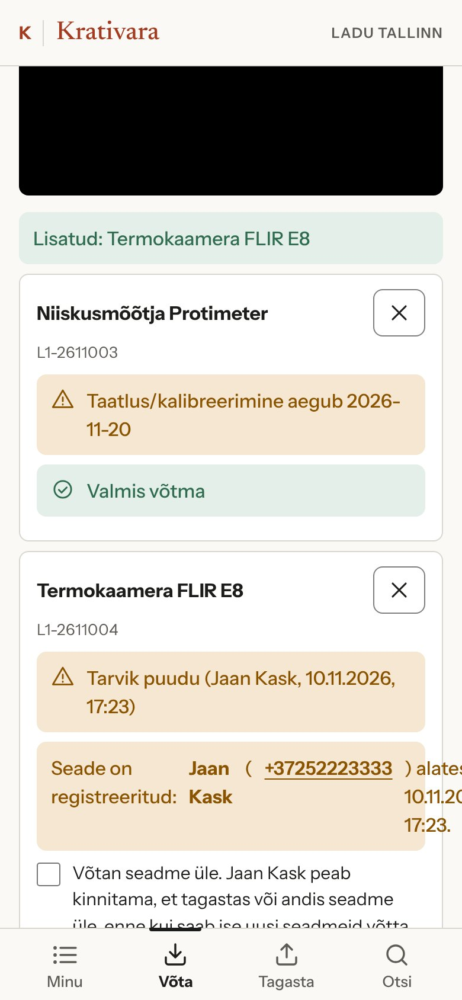
Iga seadme juures on kohe näha, kas selle saab võtta. Hoiatused, näiteks peatselt aeguv taatlus või kolleegi märkus „tarvik puudu“, ei takista võtmist.
Kui kleebis on kulunud, sisesta selle all olev 12-märgiline kood käsitsi.
Kui kolleeg unustas tagastada või andis seadme sulle otse üle, näed tema nime ja telefoni. Seadme saad võtta linnukesega „Võtan seadme üle“. Kolleeg saab teate ja kinnitab, et andis seadme üle. Kui ta seda ei kinnita, läheb küsimus haldurile.
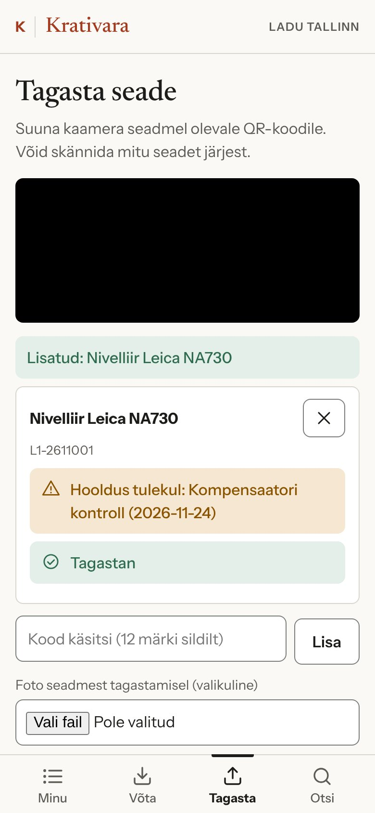
Tagastus seotakse töökohaga, kus oled, ja jääb seadme ajalukku koos kuupäeva ja kellaajaga.
Tagastada saab seadme see, kelle nimel see on. Kui seade on laos tagasi, aga kolleeg unustas selle registreerida, saad märkida seadme tagastatuks tema eest. Kolleeg kinnitab selle hiljem.
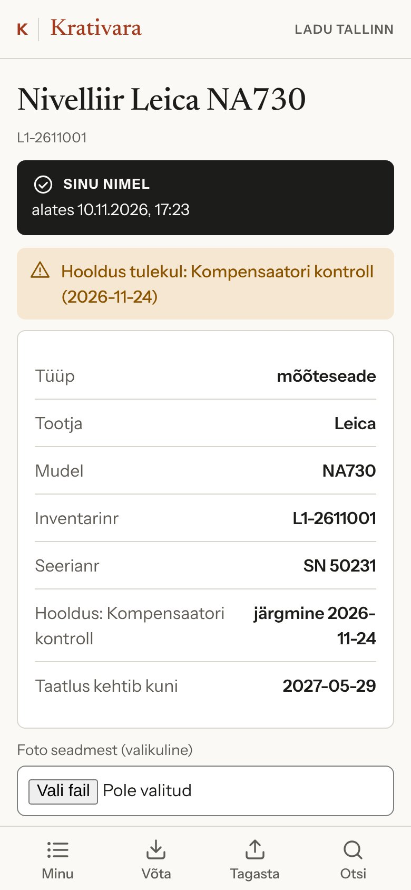
Kaart avaneb, kui vajutad seadme real või skännid kleebist telefoni kaameraga.
Pealkirja all on olek:
| Vaba | laos, saad võtta |
| Sinu nimel | alates kuupäevast |
| Kasutuses | kolleegi nimi ja telefon |
| Ei saa võtta | remondis, taatlusel või maha kantud |
Edasi on hoiatused (taatlus, hooldus, kolleegide märkused) ja seadme andmed: tüüp, tootja, mudel, inventari- ja seerianumber, taatluse tähtaeg ning järgmine hooldus.
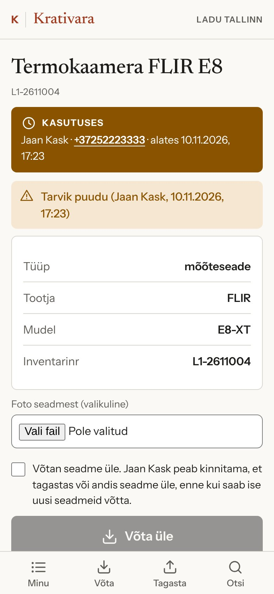
Kaardil on ka nupud Võta või Tagasta, broneeringud, märkuse lisamine ja seadme ajalugu: kes, millal ja kus seadme võttis ning tagastas.
Registriandmeid (nimi, numbrid, taatlus, olek) muudab ainult haldur. Töötaja saab lisada märkuse.
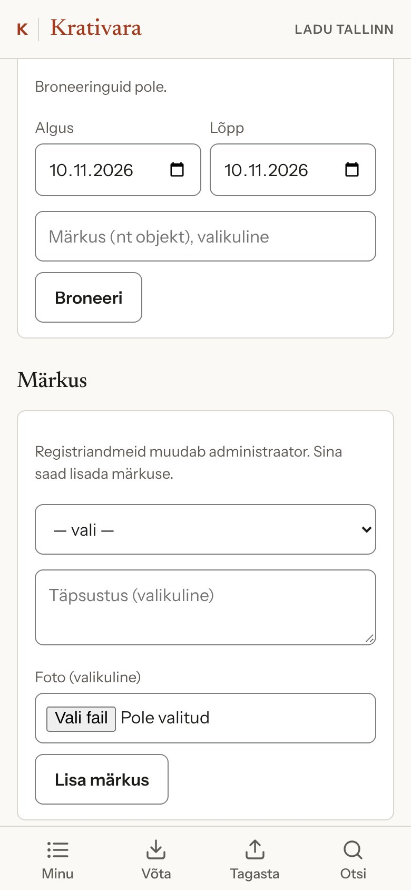
Vali algus- ja lõppkuupäev, soovi korral märkus (näiteks objekt) ja vajuta Broneeri.
Vali liik: ei tööta, vajab taatlemist, kahjustatud, tarvik puudu või muu. Lisa täpsustus ja soovi korral foto.
Märkus läheb haldurile. Tõsisematest (ei tööta, kahjustatud, vajab taatlemist) saab haldur kohe teate. Teised kasutajad näevad märkust enne võtmist, kuni haldur selle lahendab.
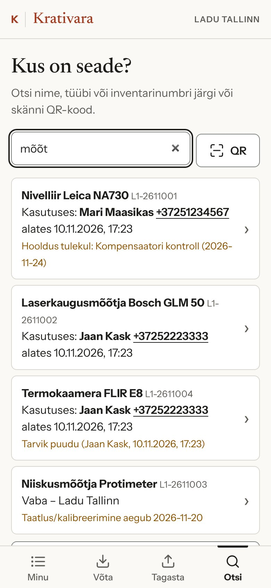
Vajuta Otsi ja kirjuta vähemalt kaks tähte seadme nimest, tüübist või inventarinumbrist. Võid ka skännida QR-koodi.
Iga tulemuse juures on näha:
Valitud töötajatel (superkasutajad, näiteks laojuhataja) on lisaks vaade Laod ja seis: iga lao seadmed ja see, mis on parajasti kasutuses.
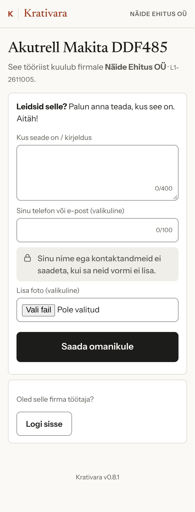
Kui kõrvaline inimene skännib seadme kleebist, näeb ta ainult ettevõtte nime ja seadme nime. Töötajate nimesid, telefone ega registri andmeid ta ei näe.
Leidja saab:
Haldur saab teate kohe, koos ligikaudse asukoha ja selle inimese nimega, kelle nimel seade oli.
Haldur saab teate ka siis, kui kleebist lihtsalt skänniti. Nii märkab ta, kui seade on liikunud kuhugi, kus see olla ei tohiks.
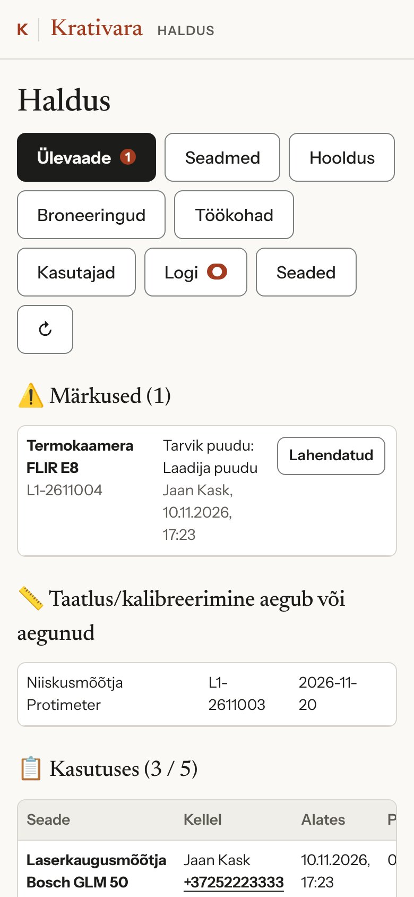
Halduse leht on ettevõtte halduri jaoks (eraldi võti). Vahekaartidel on punane number, kui seal on midagi üle vaadata.
| Ülevaade | märkused, vaidlused, kinnitust ootavad kasutajad, aeguv taatlus, mis on praegu kasutuses |
|---|---|
| Seadmed | lisamine ja muutmine, sildid, kleebised, kataloog, eeltrükitud koodid |
| Hooldus | hooldusfirmad ja töökäsud |
| Broneeringud | kõik broneeringud, tühistamine |
| Töökohad | laod ja objektid, A4 plakat QR-iga |
| Kasutajad | kinnitamine, peatamine, taastuskood, superkasutaja |
| Logi | kõik sündmused, väljavõte tabelina |
| Seaded | ettevõtte nimi, teavitused, limiidid, kalendri link |
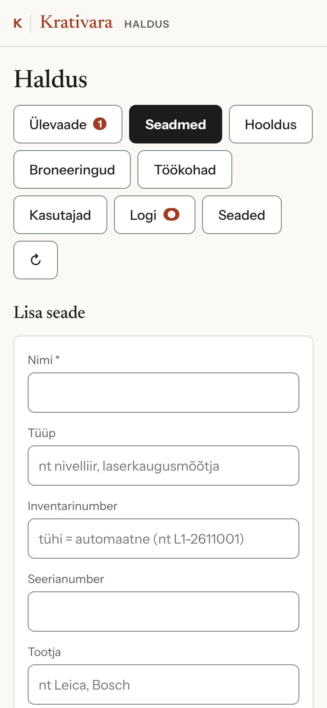
Seadmed → Lisa seade. Kohustuslik on ainult nimi. Inventarinumber tekib ise (näiteks L1-2611001 = ladu L1, 2026 november, esimene seade), soovi korral sisesta oma.
Kui kleebised on juba trükitud, vajuta välja „Kood“ juures Skänni ja skänni kleebis. Seade seotakse selle koodiga.
Seadme juurde saab lisada tüübi, tootja, mudeli, seerianumbri, koduladu, taatluse tähtaja ja lisainfo, mida näevad kõik kasutajad.
Kustutatud seadme saab 30 päeva jooksul taastada. Kellegi nimel olevat seadet kustutada ei saa.
Töökohad → lisa ladu või objekt ja prindi A4 plakat QR-koodiga. Vali, kas uued kasutajad saavad kohe alustada või ootavad sinu kinnitust.
Kasutajad → kinnita, peata või anna parooli taastuskood. Superkasutaja (näiteks laojuhataja) näeb kõiki seadmeid ja ladude seisu.
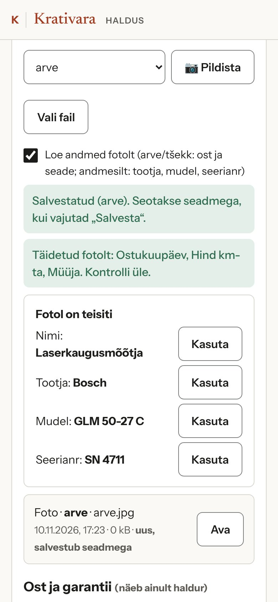
Seadme juures saab hoida ostu andmeid: ostukuupäev, hind, müüja ja garantii lõpp. Neid näeb ainult haldur.
Originaalfail jääb seadme juurde ja seda saab hiljem avada. Andmesildilt loetakse tootja, mudel, seerianumber ja valmistamise aasta.
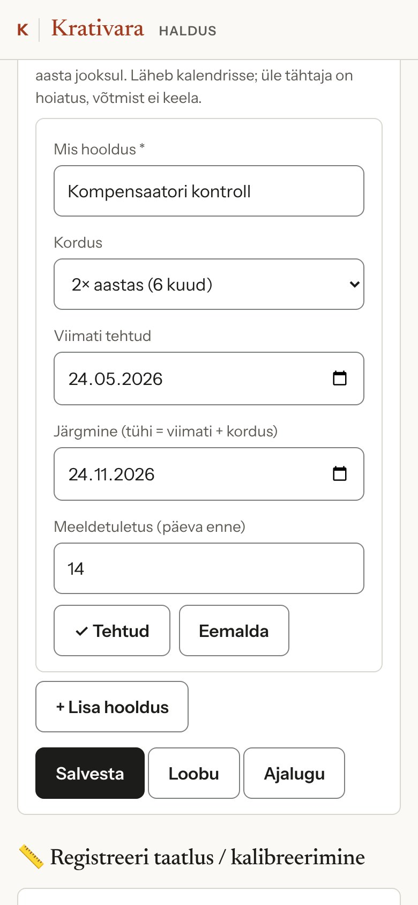
Seadmel on taatluse tähtaeg ja intervall kuudes. Registreeri taatlus (kuupäev, tunnistuse number, labor, tulemus) arvutab järgmise tähtaja. Aegunud taatlusega seadet võtta ei saa.
Lisa seadmele hooldusplaan, näiteks:
Iga plaani juures on viimane ja järgmine kuupäev ning meeldetuletus (vaikimisi 14 päeva enne). Kui hooldus läheneb või on üle tähtaja, näevad seda kõik seadme kaardil. Võtmist see ei takista.
Tehtud küsib kuupäeva, kulu, tegijat ja märkust ning arvutab järgmise tähtaja.
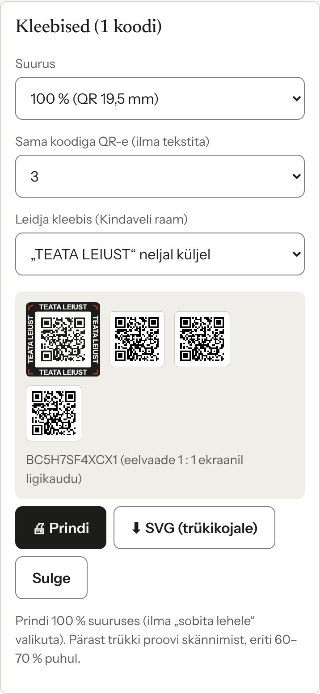
Seadmed → vali seadmed → Kleebised. Iga seadme kohta tuleb üks rida.
| Suurus | 100, 90, 80, 70 või 60 % (QR 19,5 kuni 11,7 mm) |
|---|---|
| Sama koodiga QR-e | 0–6, ilma tekstita: seadme eri külgedele, kohvrile, laadijale |
| Leidja kleebis | „TEATA LEIUST“ neljal küljel; oma tekst üleval ja all (kuni 20 märki, näiteks ettevõtte nimi ja telefon) ning „TEATA LEIUST“ külgedel; või ilma |
Eelvaade on kohe näha. Prindi või laadi alla SVG trükikojale.
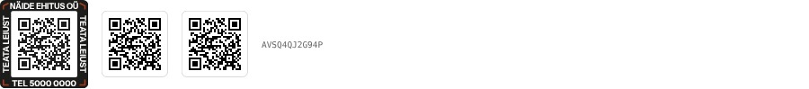
Prindi 100 % suuruses, ilma „sobita lehele“ valikuta. Väiksemate (60–70 %) kleebiste puhul proovi enne skännimist oma telefonidega.
Sildid (32 × 44 mm) on nime ja inventarinumbriga sildid seadmele. Eeltrükitud koodid: prindi korraga näiteks 200 kleebist ja seo need seadmetega lisamise käigus.
Kui seade läheb remonti, kalibreerimisse või hooldusesse väljaspool ettevõtet, teeb hooldusfirma oma sissekanded otse seadme juurde.
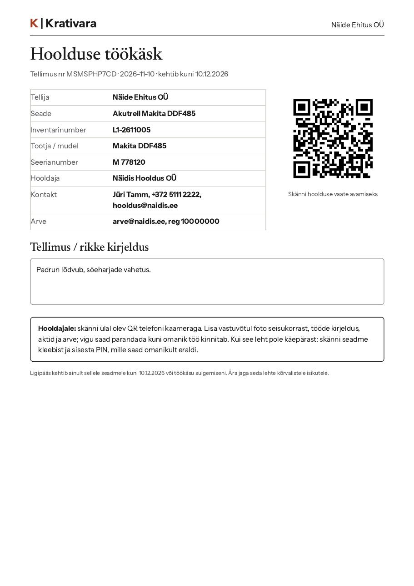
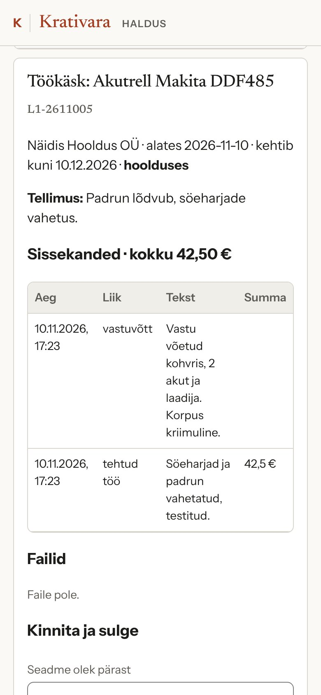
Hoolduse vahekaardil näed kõiki töökäske ja nende olekut. Kui hooldaja märgib töö tehtuks, saad teate ja vahekaardil on punane number.
Töökäsu juures on hooldaja sissekanded, summad ja failid. Kui hooldaja on midagi parandanud või eemaldanud, näed ka eelmist versiooni.
Vali seadme olek pärast hooldust (kasutusel, remondis või maha kantud) ja hooldusplaan, mis sai tehtud. Sissekanded ja summa lähevad seadme hooldusajalukku ning hooldaja ligipääs lõpeb.
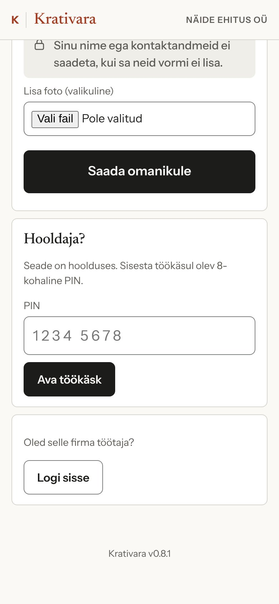
Sisenemiseks on kaks võimalust:
Telefon jääb töökäsuga seotuks 12 tunniks. Hiljem sisene uuesti samal viisil.
Hooldaja näeb ainult selle seadme tehnilisi andmeid ja tellimuse kirjeldust.
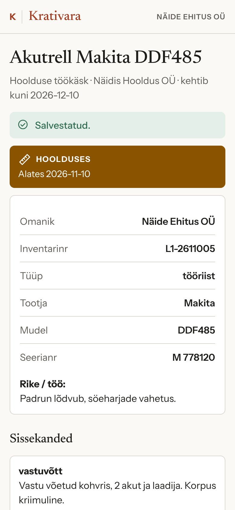
Liigid: vastuvõtt, tehtud töö, osad ja materjal, akt või tunnistus, kooskõlastus, muu. Summa (km-ta) on valikuline.
Alusta vastuvõtust: seisukord ja tarvikud.
Pildista või lisa fail (foto või PDF, kuni 10 MB): akt, arve, tunnistus.
Vali valmis, võib tagastada, ei ole parandatav või vajab kooskõlastust ja vajuta Märgi tehtuks.
Kuni omanik töö kinnitab, saad sissekandeid ja faile muuta ja eemaldada.
| Töötaja | Superkasutaja | Haldur | Hooldaja | Leidja | |
|---|---|---|---|---|---|
| Võtta ja tagastada | ✓ | ✓ | ✓ | ||
| Seadme kaart ja ajalugu | ✓ | ✓ | ✓ | ainult tema töö | |
| Otsing | ✓ | ✓ + laod | ✓ | ||
| Märkus, broneering | ✓ | ✓ | ✓ | ||
| Registriandmed, kleebised | ✓ | ||||
| Hinnad ja ostudokumendid | ✓ | ||||
| Hoolduse sissekanded | kinnitab | ✓ | |||
| Leiuteade | saab teate | ✓ |
Kaamera ei avane. Luba brauseris kaamera kasutamine või sisesta kleebise kood käsitsi.
Kleebis ei loe. Puhasta kleebis ja hoia telefoni 15–25 cm kaugusel. Vajadusel prindi uus sama koodiga kleebis.
Unustasin tagastada. Kolleeg saab seadme üle võtta või märkida selle sinu eest tagastatuks. Kinnita teade avalehel.
Seade on minu nimel, aga see pole minu käes. Vasta avalehe teatele „Ei, vaidlustan“ ja kirjuta põhjus. Küsimus läheb haldurile.
Uus telefon. Ava töökoha plakatilt rakendus ja vali „Logi sisse“.
Rakendus teatab uuest versioonist. Vajuta „Värskenda“.
© 2026 Kindavel · K | Krativara